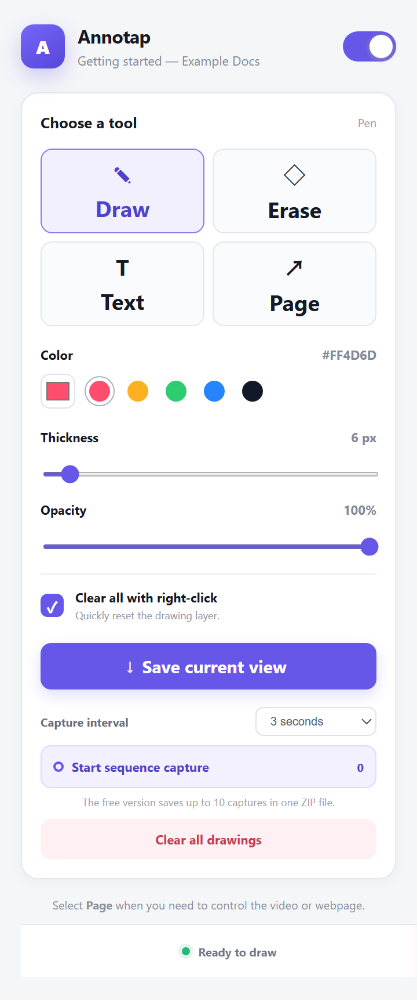
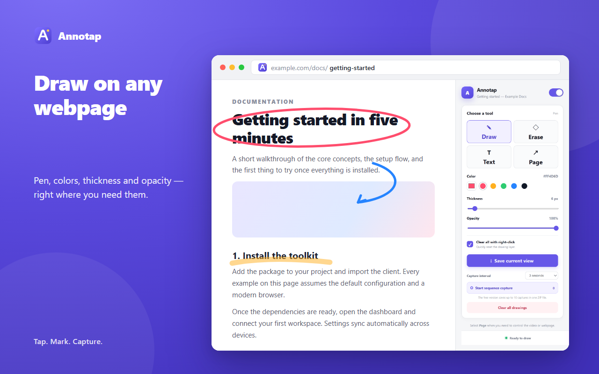
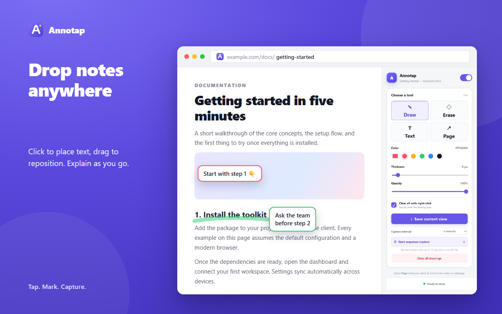
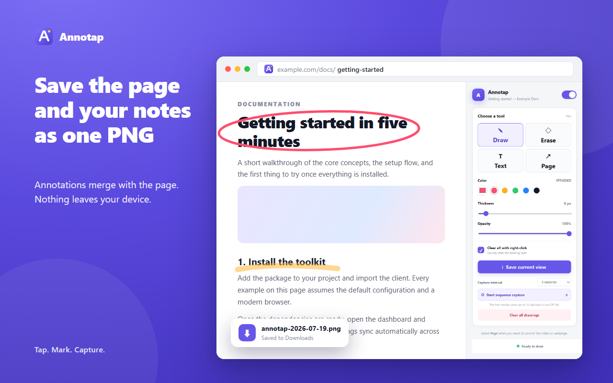
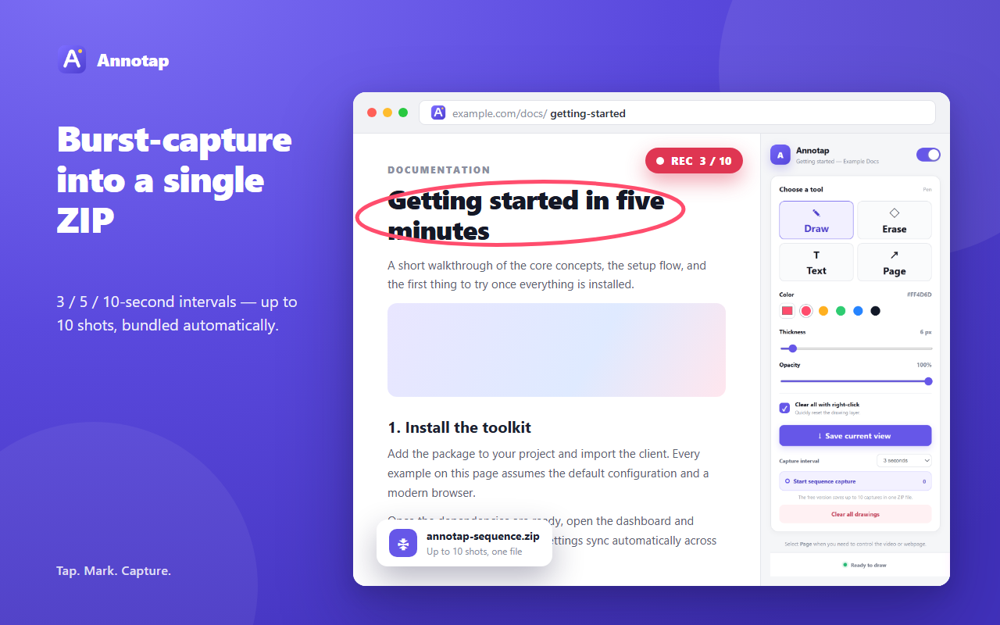

1 What is Markerly?
Whenever you need to point something out or explain something on a webpage, Markerly places a transparent canvas on top of the page. Pick a tool from the side panel and draw freehand or drop text right on the page. Your annotations are composited with the page background into a single PNG, and if you need a sequence, Markerly can auto-capture up to 10 frames at 3/5/10-second intervals and bundle them into a ZIP.
Draw & erase freely
Adjust pen color, thickness, and opacity — eraser has its own size
Add & move text
Click to place text, then drag it anywhere on the page
Page control mode
Switch to Page mode when you need to play a video or scroll
Save in one go
Export a single PNG, or up to 10 sequence captures as a ZIP
Who is it for?
2 Installation
Markerly can be loaded directly in Chrome's developer mode. Follow these steps:
- Open
chrome://extensionsin your address bar. - Turn on Developer mode in the top-right corner.
- Click Load unpacked.
- Select the Markerly project folder you downloaded.
- Click the Markerly icon in the toolbar to open the side panel.
Updated the code? Click the Refresh button on the Markerly card at chrome://extensions to apply your changes instantly.
3 Core usage
3-1. Open the side panel & turn on the canvas
Click the Markerly icon in the toolbar to open the side panel. Use the toggle in the top-right to enable the canvas for the current tab. The canvas works independently per tab, and on the same tab + URL your drawings are automatically restored even after a refresh.

3-2. Choose a tool
In the "Choose a tool" section of the side panel, pick one of four actions.
| Tool | What it does | Best for |
|---|---|---|
| Draw | Draw freehand lines with the pen | Highlights, arrows, circles |
| Erase | Erase with an independent eraser size | Partial edits, removing stray lines |
| Text | Click to place text, drag to reposition | Explanatory labels, numbering |
| Page | Disable the canvas and interact with the page | Playing videos, scrolling, clicking links |


4 Capturing the screen
Save the current view as PNG
Click Save current view to export a single PNG image that combines the visible webpage with your annotations. It's saved directly to your Downloads folder — no external servers involved.

Sequence capture as ZIP
Want to record a step-by-step change? Use sequence capture. Pick an interval — 3, 5, or 10 seconds — then click Start sequence capture. Markerly will automatically snap up to 10 frames and bundle them into a single ZIP file.
During sequence capture — keep the side panel open. If you switch tabs or close the panel, capture stops automatically and saves the images captured so far.

5 Tips & limitations
Handy tips
Clear all with right-click — turn on "Clear all with right-click" in the side panel, then right-click anywhere on the canvas to instantly reset your drawings.
Drawings survive a refresh — on the same tab and URL, your annotations are automatically restored after a page reload. Closing the tab, however, clears the session data.
Works on local HTML files too — to use Markerly on file:// pages, enable Allow access to file URLs in the extension's details.
Pages where it won't run
Chrome internal pages (chrome://...) and the Chrome Web Store are blocked by browser security policy. Please use Markerly on regular webpages.
6 Privacy
Markerly is a local-only tool. Drawing data stays in the browser session, and captured images are saved directly to your device — never sent to an external server. Capture only runs when you explicitly press a button.
| Item | How it's handled |
|---|---|
| Drawing data | Browser session storage (deleted when tab closes) |
| Captured images | Saved directly to your Downloads folder |
| External server transfer | None |
| Ads & third-party tracking | None |